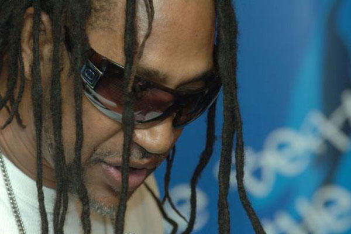
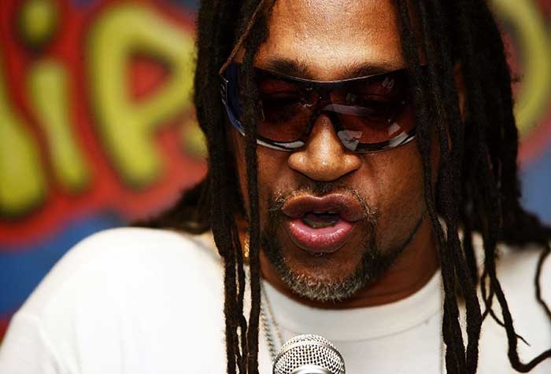

KOOL DJ HERC
Rap

Le rap est une forme d'expression vocale sur fond musical appartenant au mouvement culturel hip-hop, apparue au milieu des années 1970 dans les ghettos aux États-Unis. Le hip-hop est apparu dans le Bronx. Le rap consiste le plus souvent à égrener des couplets rimés séparés par des refrains, accompagnés de rythmes (beat, scratching, échantillonnage). Ayant été influencé par d'autres genres musicaux (reggae, blues, jazz, etc.), le rap a acquis une popularité de plus en plus grande au fil des années 1980.
Aux premières heures, les MC's, (Master of Ceremony ou Microphone Controller) servaient juste à soutenir les DJ's, et les parties rappées étaient simplement appelées MC-ing (emceeing). Le rap a débuté aux États-Unis à la fin des années 1960 Le rap comme le reste de la culture hip-hop cumule un aspect triste, hédoniste et un aspect contestataire. Les thèmes abordés varient selon les genres et ont évolué selon les époques. Comme la soul et le funk dont ils s'inspirent, les textes traitent des sujets communs à toute la musique populaire occidentale, c’est-à-dire la vie quotidienne, l'amour ou le sexe.

La première chanson de ce genre est The Message écrite et chantée par Grandmaster Flash en 1979. Ces textes, parfois très virulents contre les symboles du pouvoir, la police ou la justice, ont stigmatisé le rap pour une partie de la population. Pour David O'Neill, le succès de The Message a favorisé en France une conception très politisée du rap contrairement à des racines américaines plus hédonistes1. Les critiques violentes sont en fait assez minoritaires et l'aspect contestataire se limite le plus souvent à une dénonciation qui passe par les descriptions des problèmes sociaux tels que l'homophobie, le racisme, la pauvreté, le chômage, l'exclusion.
Les thématiques récurrentes, notamment dans le gangsta rap, se retrouvent autour des produits de consommation et des symboles du pouvoir, ainsi que des femmes, des voitures de luxe ou des armes à feu. Les rappeurs jouent sur ces fantasmes et se construisent des personnages en général sans lien avec leur vraie personnalité et leur quotidien réel. Des critiques ont été faites contre ces textes qualifiés de sexistes2, matérialistes ou prônant la violence, par des hommes politiques et par une partie du milieu rap.